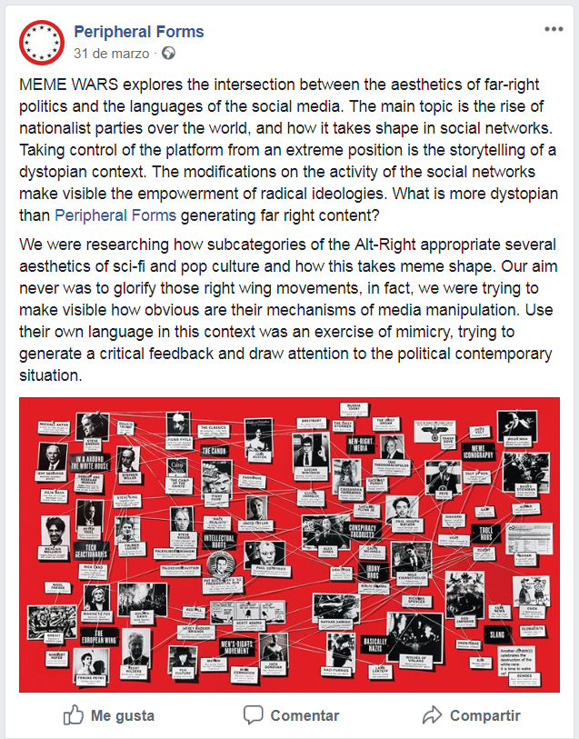
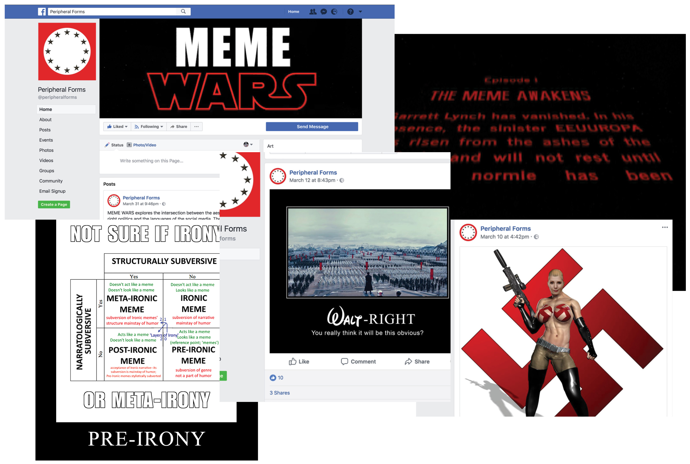

juliadelrioeria@gmail.com

"Meme Wars" Is a collaboration with Guillem Sarria for Peripheral Forms Social Networks residency. The project rexplores the intersection between the aesthetic of far-right politics and the languages of the social media. Taking control of the platform from a extreme position will be the storytelling of a dystopian context.
